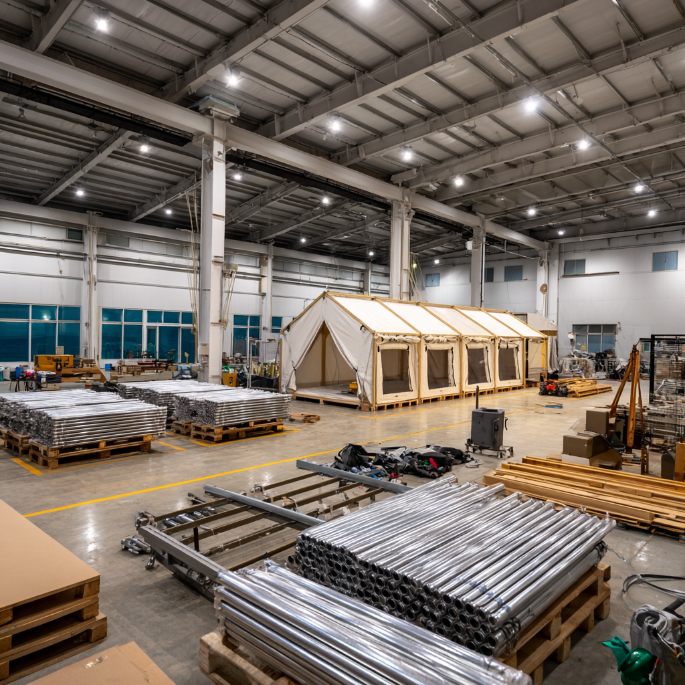

SHOWROOM VISIT
화순 쇼룸에서
직접 확인하세요
사진만으로는 결정하기 어렵습니다. 16년 경력의 대표가 직접 상담합니다.
- 3D 도면 무료 설계 (Fusion 360 기반)
- 현장 맞춤형 샘플 직접 확인
- 특허 무용접 조인트 강도 테스트 시연
- 방문 시 견적 추가 5% 할인

📍 전남 화순군 · 연중 예약제 운영
땅은 있지만 자금이 부족하신가요? 자금은 있지만 시공 노하우가 없으신가요? WOCS가 글램핑 시공·운영 기술을 투자하고, 지주는 부지를 제공하여 수익을 공유하는 새로운 파트너십 모델입니다.

초기 투자 없이 유휴 부지에서 안정적인 월 수익 발생. 토지 가치 상승 효과.
좋은 부지를 확보하고, 시공 + 운영 노하우를 수익화. 반복 가능한 모델.
5동 기준 월 순수익 300~500만원. 지주·WOCS 각각 안정적 분배.
사진만으로는 결정하기 어렵습니다. 16년 경력의 대표가 직접 상담합니다.